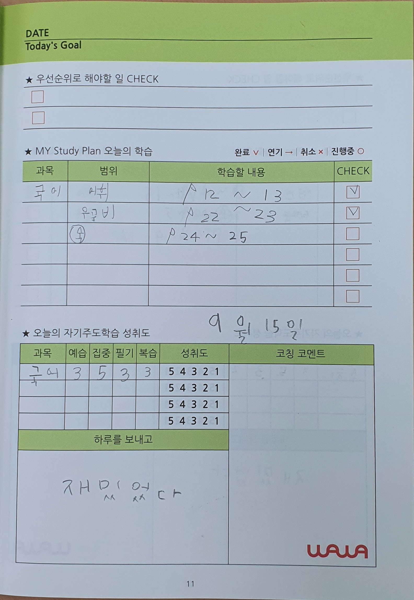
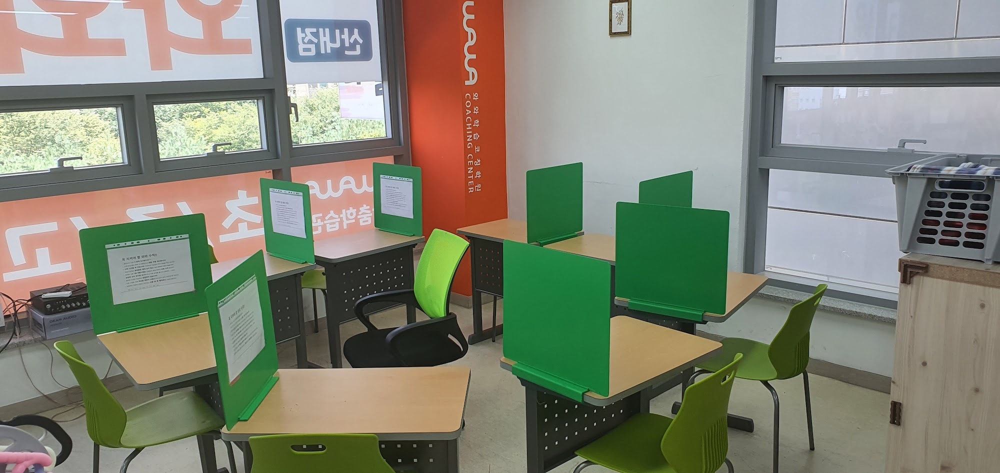
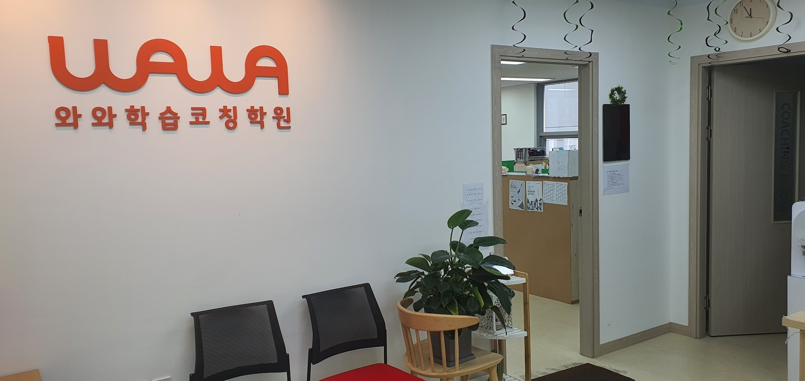
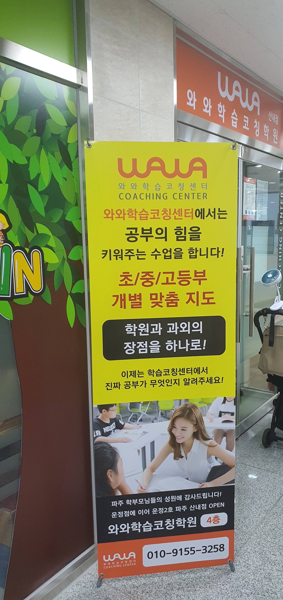

안녕하세요, 경기 파주시 목동동의 와와학습코칭 산내점입니다. 청암로17번길에 있는 센터로, 산들초등학교(산들초)·청암초등학교(청암초)·청미르초등학교(청미르초)·산내초등학교(산내초) 아이들이 가까이에서 오가는 운정신도시 동네에 있습니다.
오늘은 사진 한 장으로 이야기를 시작하려 합니다. 교실도 책상도 아니고, 아이가 직접 쓴 플래너 한 쪽입니다. 9월 15일 자입니다.
채점표는 결과만 알려 줍니다
공부가 끝나고 아이에게 남는 기록은 대체로 하나입니다. 동그라미와 빗금이 그어진 문제집 한 쪽입니다. 몇 개 맞았는지는 알 수 있지만, 그것뿐입니다. 오늘 집중이 됐는지, 필기를 하면서 풀었는지, 어제 배운 것을 한 번이라도 다시 봤는지는 채점표에 남지 않습니다.
그래서 며칠만 지나면 아이도 부모님도 같은 말을 하게 됩니다. "요즘 공부 어때?" "그냥 그래요." 나쁜 대답이 아닙니다. 대답할 재료가 없을 뿐입니다. 맞고 틀린 개수 말고는 기억에 남은 게 없으니까요.
산내점 아이들이 쓰는 플래너 아래쪽에는 '오늘의 자기주도학습 성취도'라는 표가 있습니다. 과목 옆으로 칸이 네 개입니다. 예습 · 집중 · 필기 · 복습. 사진 속 아이는 국어 줄에 각각 3, 5, 3, 3을 적었습니다. 집중은 잘 됐고 나머지는 보통이었다는 뜻입니다.
네 칸을 스스로 매기면 달라지는 것
이 네 칸이 하는 일은 점수를 매기는 게 아닙니다. 공부를 네 조각으로 나눠 보게 하는 것입니다.
"오늘 공부 잘했어?"라는 질문에는 아이가 답할 수 없습니다. 너무 커서 손에 잡히지 않기 때문입니다. 그런데 "필기는 몇 점?"이라고 물으면 아이는 답을 합니다. 자기가 방금 무엇을 했는지 떠올릴 수 있는 크기의 질문이기 때문입니다.
그리고 숫자를 적으려면 그 전에 떠올리는 과정을 반드시 거칩니다. 예습 칸에 점수를 적으려면 오늘 시작 전에 앞부분을 봤는지 생각해야 하고, 복습 칸을 채우려면 지난번 것을 다시 봤는지 돌아봐야 합니다. 점수 자체보다 이 몇 초가 중요합니다. 며칠 지나면 아이가 "오늘은 복습을 안 했네"를 스스로 알아차립니다. 그때부터가 자기주도학습입니다.
낮은 점수를 적었다고 혼내면 이 구조는 곧바로 무너집니다. 아이는 점수를 올려 적기 시작하고, 표는 의미를 잃습니다. 3점이라고 적힌 칸을 보시면 "3점이네, 그럼 내일은 뭘 하면 4점이 될까?" 정도가 좋습니다. 평가가 아니라 다음 할 일을 정하는 도구로 쓰는 것입니다.
사진 맨 아래 '하루를 보내고' 칸에는 아이 글씨로 "재밌었다"가 적혀 있습니다. 한 줄이지만 이 칸도 자기 상태를 말로 꺼내 보는 연습입니다.

계획은 '쪽수'로 적어야 지켜집니다
위 사진은 산내점의 학습실입니다. 책상마다 초록 가림판이 세워져 있고, 가림판에는 학습 안내가 끼워져 있습니다. 아이가 앉아서 플래너를 펴는 자리입니다.
플래너 위쪽 'MY Study Plan' 표에는 과목 · 범위 · 학습할 내용 · 체크 칸이 있습니다. 사진 속 아이는 국어 어휘 12~13쪽, 문제집 22~23쪽, 24~25쪽을 적어 두었고 앞의 두 줄에는 체크 표시가 되어 있습니다. 세 번째 줄은 아직 비어 있습니다.
여기서 눈여겨보실 것은 계획이 쪽수로 적혀 있다는 점입니다. 아이들이 세우는 계획은 대개 "국어 하기", "수학 열심히"입니다. 이런 계획은 지켜지지 않습니다. 끝이 어디인지 모르기 때문입니다. 끝을 모르면 시작도 미뤄집니다.
반대로 '22~23쪽'이라고 적으면 두 가지가 생깁니다. 첫째, 언제 끝나는지가 보입니다. 두 쪽이면 앉을 만하다고 아이가 판단할 수 있습니다. 둘째, 끝냈을 때 체크할 것이 생깁니다. 체크 표시 하나가 별것 아닌 것 같지만, 아이에게는 오늘 뭔가를 해냈다는 유일한 증거입니다.
세 줄 중 두 줄만 체크된 날도 괜찮습니다. 못 한 한 줄이 그대로 남아 있으니 내일 그 줄부터 시작하면 됩니다. 계획표의 목적은 다 지키는 게 아니라, 못 한 것이 사라지지 않게 하는 것입니다.

플래너는 코치가 대신 써 주지 않습니다
산내점에 들어서면 보이는 공간입니다. 오른쪽으로 상담실과 데스크가 이어져 있습니다.
플래너를 쓰는 곳은 많습니다. 다만 누가 쓰느냐가 다릅니다. 선생님이 오늘 할 분량을 적어 주고 아이는 그대로 푸는 방식이면, 그건 플래너가 아니라 과제 안내문입니다. 이 경우 아이는 3년을 써도 계획 세우는 법을 배우지 못합니다.
산내점에서 코치가 맡는 자리는 다른 쪽입니다. 아이가 적은 계획이 오늘 안에 끝낼 수 있는 양인지 같이 보고, 하루가 끝나면 네 칸에 적힌 숫자를 보면서 어느 칸이 계속 낮게 나오는지 짚어 줍니다. 복습 칸이 2주 내내 낮은 아이라면, 문제를 더 푸는 것보다 푼 것을 다시 보는 자리를 만드는 게 먼저입니다. 플래너 옆에 코칭 코멘트 칸이 따로 있는 이유입니다.
초등 고학년은 이 훈련을 시작하기 좋은 시기입니다. 아직 과목 수가 감당할 만하고, 중학교에 올라가면 스스로 챙겨야 할 것이 한 번에 늘어나기 때문입니다. 그때 처음 계획을 세워 보는 것과, 이미 해 본 상태로 올라가는 것은 차이가 큽니다.

운정 2호점으로 문을 연 자리
산내점 입구에 세워진 안내 배너입니다. 아래쪽에 "운정점에 이어 운정2호 파주 산내점 OPEN"이라고 적혀 있습니다. 운정신도시에 두 번째로 문을 연 센터라는 뜻입니다.
센터는 건물 4층에 있습니다. 목동동은 초등학교가 가까이 모여 있는 동네라, 산들초등학교·청암초등학교·청미르초등학교·산내초등학교 아이들이 걸어서 오갈 수 있는 거리에 있습니다.
배너에 적힌 "초·중·고등부 개별 맞춤 지도"라는 문구는 학년별로 다른 것을 한다는 뜻이기도 하지만, 같은 학년 안에서도 아이마다 다른 것을 한다는 뜻에 더 가깝습니다. 앞에서 본 네 칸 표가 그렇습니다. 어떤 아이는 집중 칸이 늘 낮고, 어떤 아이는 복습 칸만 비어 있습니다. 같은 학년이어도 손대야 할 자리가 다릅니다.
집에서 오늘부터 해 보실 수 있는 것
- "공부 다 했어?" 대신 "오늘 몇 쪽 했어?" — 앞의 질문에는 "응"이나 "아니" 둘 중 하나가 나오고 대화가 끝납니다. 뒤의 질문에는 아이가 숫자를 말해야 하고, 그러려면 오늘 한 일을 떠올려야 합니다.
- 종이 한 장에 오늘 할 것을 쪽수로 적게 하세요 — 플래너가 없어도 됩니다. 과목 이름과 '몇 쪽부터 몇 쪽까지' 두 줄이면 충분합니다. 끝이 정해진 계획만 지켜집니다.
- 하루 끝에 한 가지만 스스로 점수 매기게 하세요 — 네 칸을 다 하실 필요는 없습니다. '집중' 하나만 5점 만점으로 매겨도 됩니다. 점수를 두고 평가하지 않고, 낮은 날에는 "내일은 뭘 바꿔 볼까"만 물어보시면 됩니다.
산내점 찾아오시는 길
와와학습코칭 산내점은 경기 파주시 청암로17번길 21, 월드타워5차 405호에 있습니다. 산들초등학교·청암초등학교·청미르초등학교·산내초등학교 아이들이 가까이에서 오갈 수 있는 곳입니다.
학습 진단과 상담은 무료입니다. 아이가 요즘 쓰고 있는 문제집이나 공책을 한 권 들고 오셔서, 하루에 어느 정도 분량을 감당할 수 있는지 함께 가늠해 보는 것부터 시작하셔도 좋겠습니다.